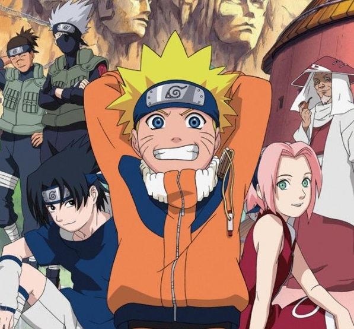
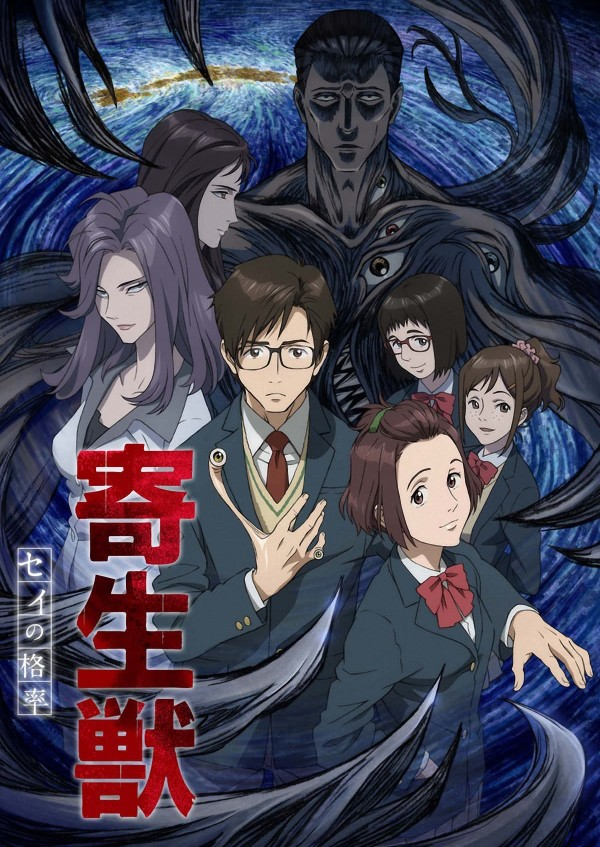
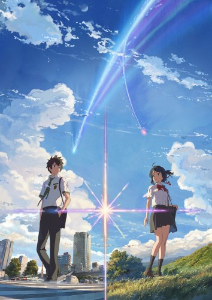
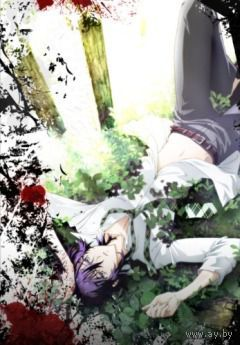
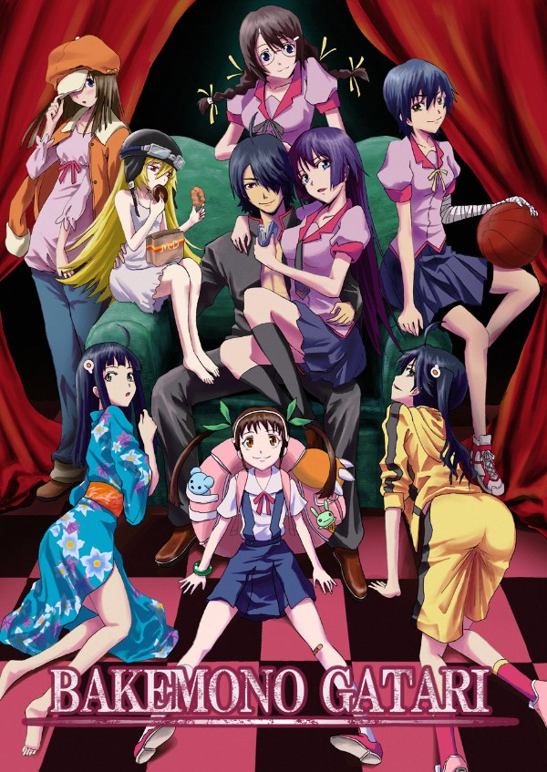
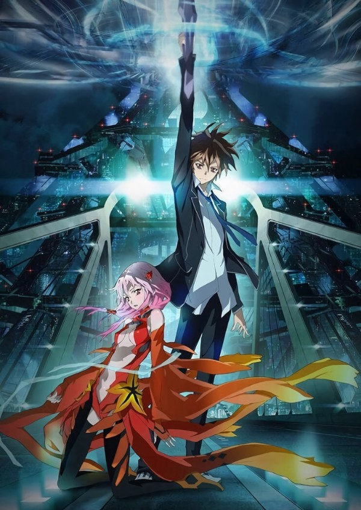
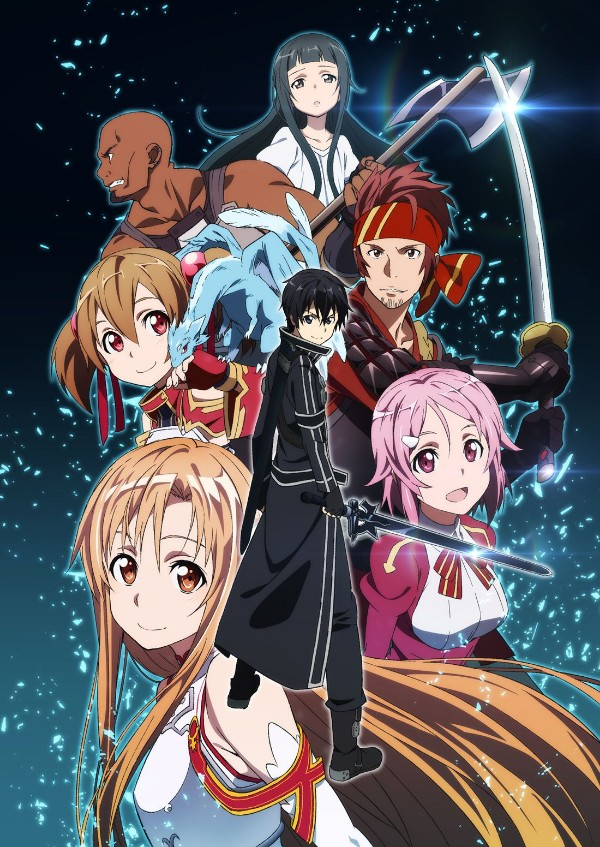

Наруто [ТВ-1]
Осень 2012
Это история, в которой рассказывается про мальчика-ниндзя. Он мечтает стать Хокаге:
главой своей деревни. Но Хокаге – это самый мудрый и сильный ниндзя деревни, поэтому
парень попытается преодолеть кучу испытаний, победить множество противников, заслужить
уважение, подрасти морально и физически.

Паразит: Учение о жизни
Осень 2014
Жители одного японского города дождались контакта с инопланетным разумом. Но нельзя
сказать, что людям их визит принёс пользу. Существа, по своей сути являющиеся
паразитами, проникают в человеческий мозг через уши или нос и захватывают контроль над
телом. Одному пареньку несказанно повезло: поскольку спал он в наушниках, пришелец не
смог захватить мозг Синити Идзуми и ограничился рукой. Юноше удалось сохранить
собственную личность, но теперь он не является единственным хозяином своего тела. Но так
или иначе, у него есть возможность противостоять нашествию паразитов. Вступив в
противостояние, у двух разумных существ, обитающих в одной телесной оболочке, появляется
общая цель: остаться в живых. И для её достижения Синити и его неудачливому захватчику
придётся заключить временное перемирие.

Твоё имя
Лето 2016
Сюжет разворачивается через месяц после первого падения кометы на Японию. Миянага Мицуба
- старшеклассница, живущая в маленькой деревне и мечтающая жить в городе. Девушка видит
сон о том, что она — это молодой человек Татибана Рю из Токио. Во сне Миянаге
встречаются новые люди, неизвестные друзья и незнакомый ей Токио. На утро, проснувшись,
Мицуба думает о том, какой странный сон она увидела. В это время в Токио Рю думает о
том, какой он видел странный сон о Мицубе…

Усопшие
Лето 2010
Сотобамура - небольшая деревня, с общим населением в 1300 жителей. Она связана с внешним
миром, всего-лишь одним единственным шоссе. Однажды, люди обнаруживают три трупа жителей
деревни. Хотя Озаки Тосио, единственный врач в деревне, он относится к смерти, как к
нормальному явлению. Однако с каждым следующим днем, жители начинают гибнуть один за
другим. Является ли это совпадением, неизвестной эпидемией или чем то другим?...

Истории монстров
Лето 2009
Как-то в школе на ничего не подозревающего старшеклассника, идущего по лестнице, упала
сверху красавица. Во время полета девушки, Коёми узнал в ней нелюдимую и молчаливую
одноклассницу Хитаги Сэндзёгахара. Парень вытянул руки, ожидая впечататься в пол, однако
Хитаги оказалась не тяжелее учебника. В скором времени наш герой понял, Хитаги
помалкивает не просто так, характер у нее оказался не подарок, а еще, в довершении ко
всему, она умеет доставать прямо из воздуха режущие и колющие предметы из разряда
канцтоваров. Оказалось, над бедной девушкой кто-то злобно подшутил, то ли демон, то ли
бог. Коёми тоже оказался парнем не промах, в свое время он был вампиром, а выручил его
Мэмэ Осино, то ли старый хиппи, то ли святой человек. В общем, смог он убедить девушку
пойти к Осино в гости, хуже мол уже не будет. Работа у героев такая - помогать девушкам
в беде, а девушек этих в школе много...

Корона грешника
Осень 2011
В ближайшем будущем, метеорит, с находящимся на нем инородным вирусом, разбился в
Японии, что привело к распространению общенациональной эпидемии и полной анархии.
Международная организация, известная как GHQ, пытается восстановить порядок, введя
военное положение в стране. Этот день стали называть "Потерянное Рождество". Десять лет
спустя, в 2039 году, Шу Оума - простой 17-летний подросток встречает Инори Юдзуриа -
странную девушку, которая побуждает его вступить в борьбу с роботами правительственной
организации и тайным обществом, цель которого остается окутанной тайной.

Мастера Меча Онлайн
Лето 2012
Любите ли вы онлайн игры? В 2022 году людям удалось создать совершенную виртуальную
реальность. Посредством специального шлема с нейроприводом, любой желающий мог
погрузиться в виртуальность игры и буквально жить там, как в реальности. Мастера меча
онлайн – новая онлайн игра, выхода который ждали миллионы геймеров. Все бы ничего, но у
главного разработчика свои планы в отношении игроков… Они будут жить в игре, пока не
пройдут ее полностью, иначе – смерть, в этой игре реальная. Главный герой – Кирито, один
из игроков мастеров меча, был бета тестером и неплохо разбирается в игре. По стилю игры
он – одиночка. Но самому игру не пройти, надо как-то выкручиваться.